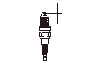

スパーク プラグの点検
スパーク プラグについて次の項目を点検し、必要ならば新品に交換する。
•
電極のすき間
•
電極部の汚れ
•
堆積物の有無
•
中心電極の絶縁部のひび割れ
スパーク プラグが焼け過ぎの場合は、次の原因が考えられる。
•
混合ガスの薄過ぎ
•
点火時期の進み過ぎ
•
冷却の不十分
•
プラグの締付け不良
スパーク プラグがカーボンで真黒にくすぶる場合は、次の原因が考えられる。
•
長いアイドリング、低速運転
•
混合ガスの濃過ぎ
•
点火時期の遅れ
•
イグニッション コイルの劣化
•
ピストン リング、バルブ ガイドの摩耗
•
電極のすき間の不良
電極部に堆積物や汚れのある場合は、プラグ クリーナで清掃する。
•
プラグ クリーナを使用した場合は、砂を確実に除去すること。
•
イリジウム プラグを清掃する場合は、プラグ クリーナにて20秒以下で行う。
•
イリジウム プラグはイリジウム チップの微粒子膜を破損する恐れがあるため、ワイヤ ブラシなどによる清掃は行わないこと。

中心電極（A）が図のように球形状になっている場合は、新品に交換する。
スパーク プラグの形式
NGK:
IZFR6K13
DENSO:
SKJ20DR-M13
•
スパーク プラグはISO（国際標準化機構）の規格品を使用。箱に 、 のマークがついている。
電極のすき間を測定し、基準値以上の場合は、プラグ ゲージを用いて調整する。
電極のすき間
基準値:
1.2－1.3mm
スパーク プラグを取付ける場合は、プラグをプラグ レンチに取付けてプラグ座面に当るまで指先で仮締めし、プラグ レンチ ハンドルで確実に締付ける。
規定トルク:
18N･m(1.8kgf･m)